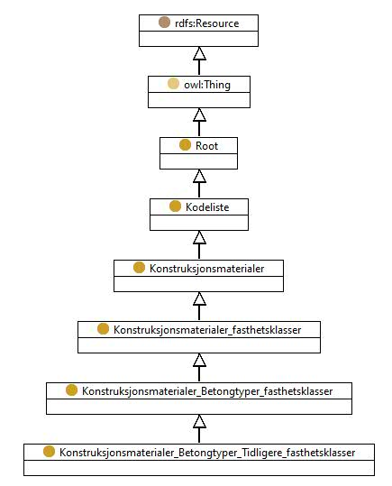

http://rdf.vegdata.no/v440-owl#Konstruksjonsmaterialer_Betongtyper_Tidligere_fasthetsklasser
Class Konstruksjonsmaterialer_Betongtyper_Tidligere_fasthetsklasser

v440:avsnitt
V-8.6
v440:kapitel
V-8
v440:kode
-
rdf:type
owl:Class
rdfs:label
Betongtyper - Tidligere fasthetsklasser
rdfs:subClassOf
v440:Konstruksjonsmaterialer_Betongtyper_fasthetsklasser
Instances
v440:Konstruksjonsmaterialer_Betongtyper_Tidligere_fasthetsklasser_Annen_betongtype
,
v440:Konstruksjonsmaterialer_Betongtyper_Tidligere_fasthetsklasser_Annen_betongtype_Annen_lettbetong
,
v440:Konstruksjonsmaterialer_Betongtyper_Tidligere_fasthetsklasser_Annen_betongtype_Annen_normalbetong
,
v440:Konstruksjonsmaterialer_Betongtyper_Tidligere_fasthetsklasser_Lettbetong_LC25_fcn-168
,
v440:Konstruksjonsmaterialer_Betongtyper_Tidligere_fasthetsklasser_Lettbetong_LC35_fcn-224
,
v440:Konstruksjonsmaterialer_Betongtyper_Tidligere_fasthetsklasser_Lettbetong_LC45_fcn-280
,
v440:Konstruksjonsmaterialer_Betongtyper_Tidligere_fasthetsklasser_Lettbetong_LC55_fcn-336
,
v440:Konstruksjonsmaterialer_Betongtyper_Tidligere_fasthetsklasser_Lettbetong_LC65_fcn-392
,
v440:Konstruksjonsmaterialer_Betongtyper_Tidligere_fasthetsklasser_Lettbetong_LC75_fcn-448
,
v440:Konstruksjonsmaterialer_Betongtyper_Tidligere_fasthetsklasser_Lettbetong_LC85_fcn-504
,
v440:Konstruksjonsmaterialer_Betongtyper_Tidligere_fasthetsklasser_Lettbetong_LC95_fcn-560
,
v440:Konstruksjonsmaterialer_Betongtyper_Tidligere_fasthetsklasser_Lettbetong_storre_enn_LC95
,
v440:Konstruksjonsmaterialer_Betongtyper_Tidligere_fasthetsklasser_Normalbetong_C25_fcn-168
,
v440:Konstruksjonsmaterialer_Betongtyper_Tidligere_fasthetsklasser_Normalbetong_C30_fcn-196
,
v440:Konstruksjonsmaterialer_Betongtyper_Tidligere_fasthetsklasser_Normalbetong_C35_fcn-224
,
v440:Konstruksjonsmaterialer_Betongtyper_Tidligere_fasthetsklasser_Normalbetong_C40_fcn-252
,
v440:Konstruksjonsmaterialer_Betongtyper_Tidligere_fasthetsklasser_Normalbetong_C45_fcn-280
,
v440:Konstruksjonsmaterialer_Betongtyper_Tidligere_fasthetsklasser_Normalbetong_C55_fcn-336
,
v440:Konstruksjonsmaterialer_Betongtyper_Tidligere_fasthetsklasser_Normalbetong_C65_fcn-392
,
v440:Konstruksjonsmaterialer_Betongtyper_Tidligere_fasthetsklasser_Normalbetong_C75_fcn-448
,
v440:Konstruksjonsmaterialer_Betongtyper_Tidligere_fasthetsklasser_Normalbetong_C85_fcn-504
,
v440:Konstruksjonsmaterialer_Betongtyper_Tidligere_fasthetsklasser_Normalbetong_C95_fcn-560
,
v440:Konstruksjonsmaterialer_Betongtyper_Tidligere_fasthetsklasser_Normalbetong_storre_enn_C95
References
as rdfs:subClassOf (
v440:Konstruksjonsmaterialer_Betongtyper_Tidligere_fasthetsklasser_Lettbetong
,
v440:Konstruksjonsmaterialer_Betongtyper_Tidligere_fasthetsklasser_Normalbetong
)
Generated with
TopBraid Composer
by
TopQuadrant, Inc.